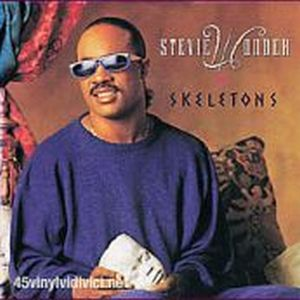
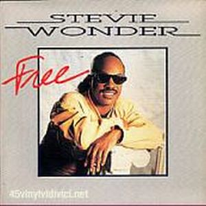

Stevie Wonder no demoró demasiado el lanzamiento de Characters, sólo 2 años desde el anterior. Fue un disco más Funky y menos Pop, lo que hizo que, salvo en las listas de R&B, no tuviera el resultado en ventas esperado.
Su primer single fue "Skeletons", muy fuerte para una audiencia generalista, continuando con la balada
"You Will Know". Del disco no podemos obviar canciones atractivas como "Free", "With Each Beat Of My Heart", o el dueto con Michael Jackson "Get it". Una colaboración recíproca, ya que Stevie colaboró en la canción "Just Good Friends" del álbum Bad de Michael Jackson.
 